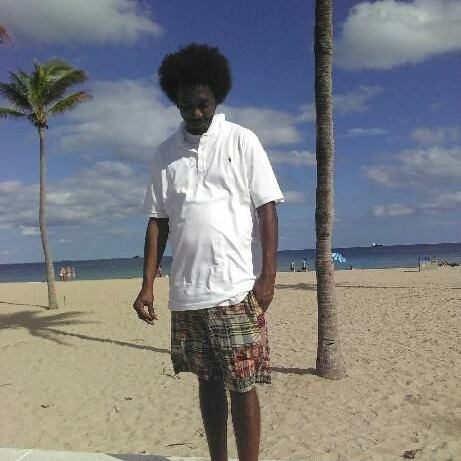

Mustafa Maingot Biography

Greetings, and welcome to my Website. My name is Mustafa Maingot, and I love the water. Working outside has been one of the greatest experiences, in which the people around me always feeds me vital information. With several companies, I worked with cranes and lifting yachts, working on a barge to help with the new construction of seawalls, and several other marine industries. Working at the Port of Palm Beach/Port Everglades has led me to get TWIC Card, and now I am waiting on my clearance from the Coast Gaurd to become a Merchant Mariner - Merchant Mariner Certification (MMC). I am a resident of Palm Beach County, but I've worked throughout the Coast of South Florida; and I plan to get my passport along with my MMC to go further out. My aspirations are to gain as much valuable experiences from working, further my education to get to the highest level possible, and to mostly become a well rounded Merchant Mariner on the water.